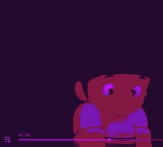
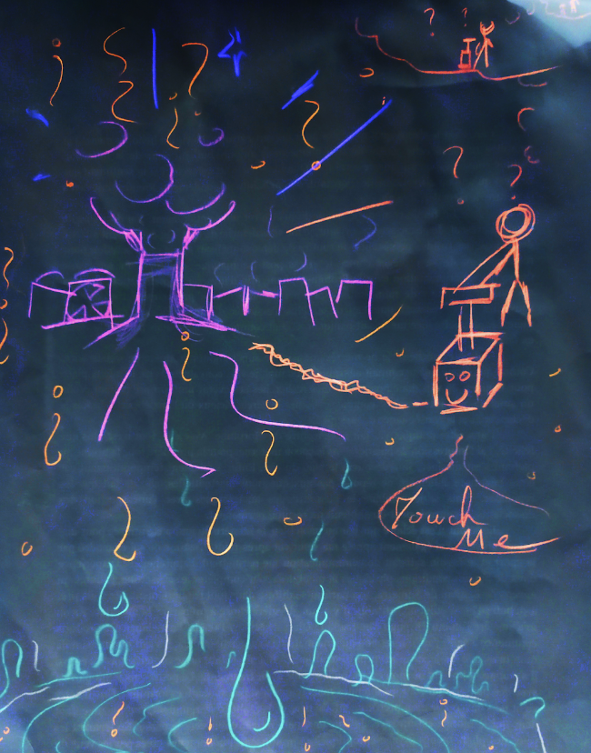

Il existe des problèmes qu'on ne peut pas résoudre. Des problèmes qui resteront à jamais incompris. Rien ne m'embête plus. Rien ne me triture plus le cerveau le soir. Pourquoi ? J'aimerais comprendre. Si ça existe, IT est forcément relié quelque part dans mon graphe connexe, je devrais pouvoir y accéder. Non, il y a comme un trou, comme un petit néant dans mon crâne. L'insolubilité ne devrait pas être possible ! Je croyais que tout avait une explication ! Pourquoi certains phénomènes échappent à la raison ? Pourquoi as-tu appuyé sur le bouton ?
 